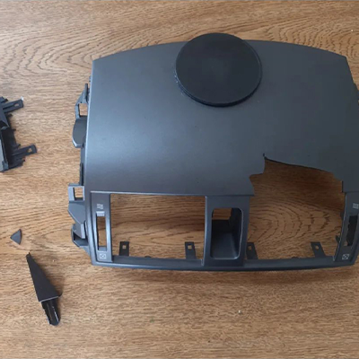
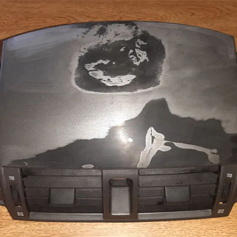
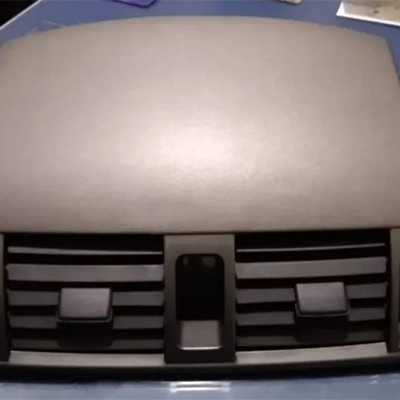
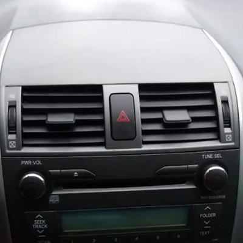

Na RC Recovery somos especializados em:
- Peças automotivas
- Peças de eletroeletrônicos
- Peças plásticas em geral
Alguns de nossos trabalhos




Dúvidas
Por que recuperar uma peça quebrada?
Além de manter a originalidade do produto, voçê gasta uma fração do valor de uma peça nova.
Qual a durabilidade de uma peça recuperada?
Devido a qualidade dos produtos que utilizamos, ligas plasticas e resinas. O produto final equipara-se ao item novo, se não, fica mais resistente que o original.
Qual a média de preço para recuperar?
Os valores podem variar de 10 à 50% do valor de uma peça original.

Redes sociais e WhatsApp!